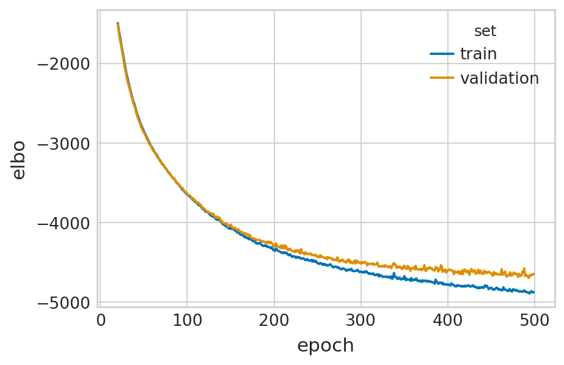
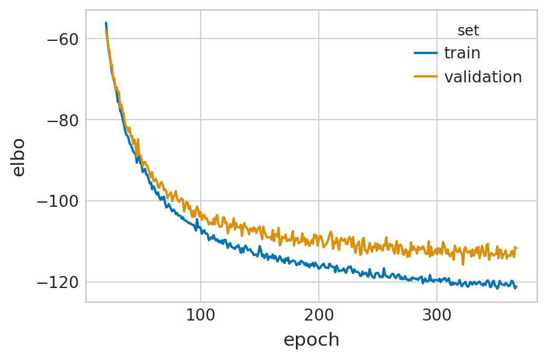
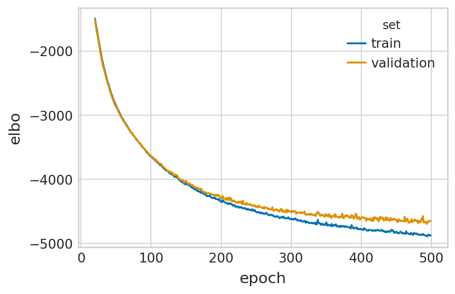
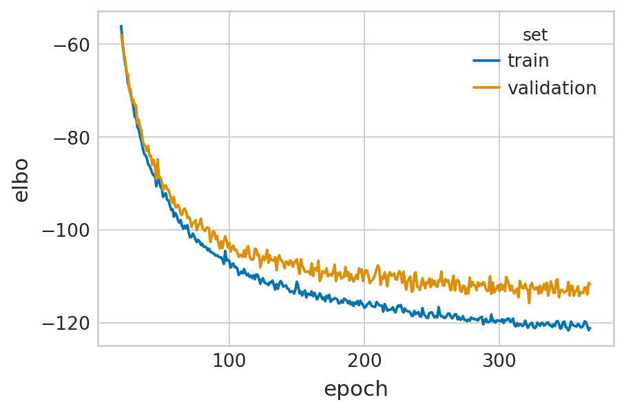
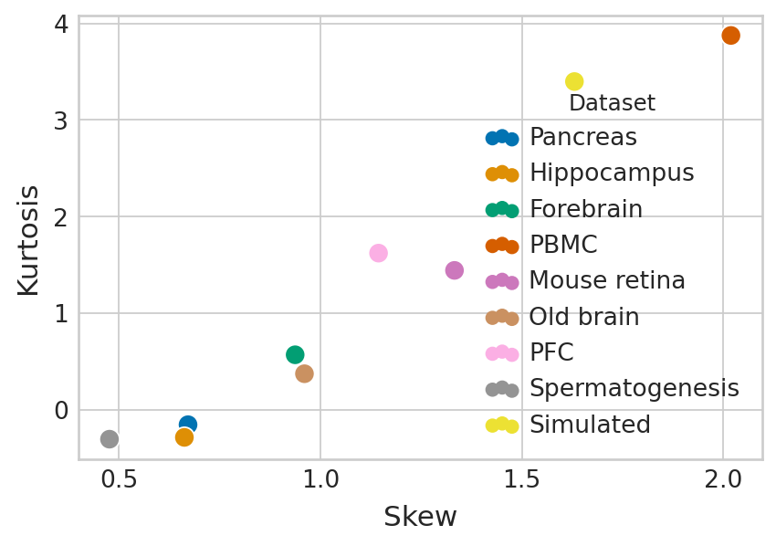
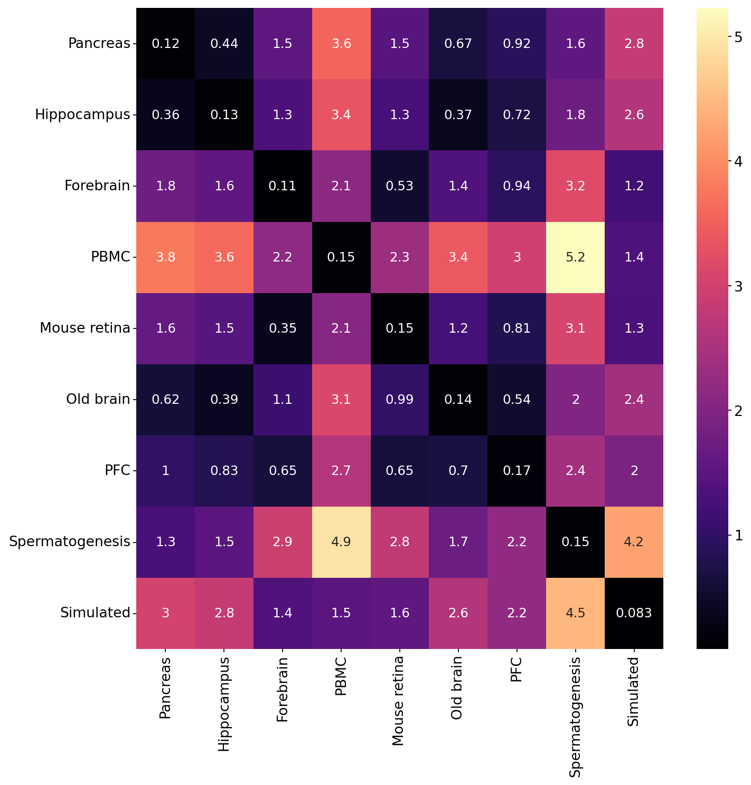
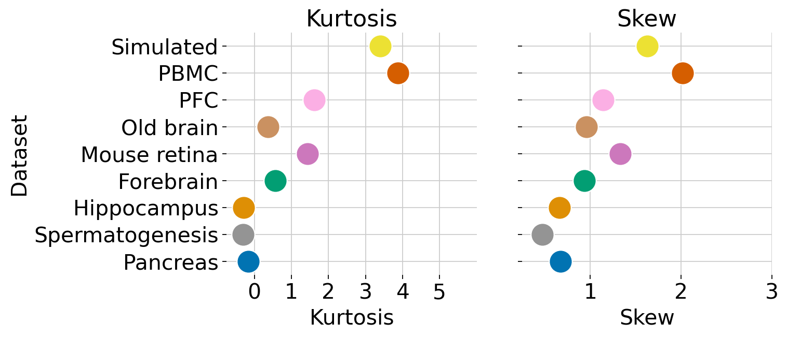

Permutation score - Dataset comparison
Contents
Permutation score - Dataset comparison#
Library imports#
import os
import sys
from tqdm import tqdm
import numpy as np
import pandas as pd
import torch
from scipy import stats
from sklearn.preprocessing import MinMaxScaler
import joypy
import matplotlib.pyplot as plt
import mplscience
import seaborn as sns
from matplotlib.gridspec import GridSpec
import scanpy as sc
import scvelo as scv
import scvi
from anndata import AnnData
from scvelo.plotting.simulation import compute_dynamics
from velovi import preprocess_data, VELOVI
sys.path.append("../..")
from utils.unraveled import simulate_burst_model
from paths import DATA_DIR, FIG_DIR
Global seed set to 0
General settings#
scvi.settings.dl_pin_memory_gpu_training = False
sns.reset_defaults()
sns.reset_orig()
scv.settings.set_figure_params('scvelo', dpi_save=400, dpi=80, transparent=True, fontsize=20, color_map='viridis')
SAVE_FIGURES = True
if SAVE_FIGURES:
os.makedirs(FIG_DIR / 'permutation', exist_ok=True)
Function definitions#
def fit_velovi(bdata):
VELOVI.setup_anndata(bdata, spliced_layer="Ms", unspliced_layer="Mu")
vae = VELOVI(bdata)
vae.train()
df = vae.history["elbo_train"].iloc[20:].reset_index().rename(columns={'elbo_train': 'elbo'})
df['set'] = 'train'
_df = vae.history["elbo_validation"].iloc[20:].reset_index().rename(columns={'elbo_validation': 'elbo'})
_df['set'] = 'validation'
df = pd.concat([df, _df], axis=0).reset_index(drop=True)
with mplscience.style_context():
sns.set_style(style="whitegrid")
fig, ax = plt.subplots(figsize=(6, 4))
sns.lineplot(data=df, x='epoch', y='elbo', hue='set', palette=['#0173B2', '#DE8F05'], ax=ax)
latent_time = vae.get_latent_time(n_samples=25)
velocities = vae.get_velocity(n_samples=25, velo_statistic="mean")
t = latent_time
scaling = 20 / t.max(0)
bdata.layers["velocities_velovi"] = velocities / scaling
bdata.layers["latent_time_velovi"] = latent_time
bdata.var["fit_alpha"] = vae.get_rates()["alpha"] / scaling
bdata.var["fit_beta"] = vae.get_rates()["beta"] / scaling
bdata.var["fit_gamma"] = vae.get_rates()["gamma"] / scaling
bdata.var["fit_t_"] = (
torch.nn.functional.softplus(vae.module.switch_time_unconstr)
.detach()
.cpu()
.numpy()
) * scaling
bdata.layers["fit_t"] = latent_time.values * scaling[np.newaxis, :]
bdata.var['fit_scaling'] = 1.0
return vae
Data loading#
nCells = 3000
nGenes = 100
T = 20
nclus= 10
seed = 42
meta = nCells,nGenes,T,nclus,seed
simdata = simulate_burst_model(*meta)
def sim_to_adata(simdata, meta):
X, cell_types, tvec, K, g_true, b_true = simdata
nCells, nGenes, T, tau, topo = meta
adata = AnnData(X[1, :, :])
adata.layers["spliced"] = X[1, :, :]
adata.layers["unspliced"] = X[0, :, :]
adata.layers["ambiguous"] = np.zeros_like(X[1, :, :])
# br = np.zeros(nCells,dtype=bool)
# br[branch_cells]=True
adata.obs["time"] = tvec
adata.obs["celltype"] = np.array(cell_types).astype(str)
adata.var["gamma"] = g_true
adata.var["beta"] = b_true
adata.var["Gene"] = np.asarray([str(i) for i in range(len(g_true))])
# adata.uns["K"]=K
n_K = K.shape[1]
for i in range(n_K):
adata.var["k" + str(i)] = K[:, i]
return adata
adata = sim_to_adata(simdata, meta)
adatas = [
scv.datasets.pancreas(DATA_DIR / "pancreas" / "endocrinogenesis_day15.h5ad"),
scv.datasets.dentategyrus_lamanno(DATA_DIR / "dentategyrus" / "DentateGyrus.loom"),
scv.datasets.forebrain(DATA_DIR / "forebrain" / "hgForebrainGlut.loom"),
sc.read(DATA_DIR / 'pbmc' / 'pbmc_10k.h5ad'),
sc.read(DATA_DIR / 'retina' / 'mouse_retina.h5ad'),
sc.read(DATA_DIR / "old_brain" / "old_brain.h5ad"),
sc.read(DATA_DIR / "pfc" / "pfc.h5ad"),
sc.read(DATA_DIR / "spermatogenesis" / "spermatogenesis.h5ad"),
adata,
]
del adata
names = ["Pancreas", "Hippocampus", "Forebrain", 'PBMC', 'Mouse retina', 'Old brain', 'PFC', 'Spermatogenesis', 'Simulated']
labels_keys = ["clusters", "clusters", "Clusters", "celltype", "Clusters", 'clusters_coarse', 'clusters', 'clusters', "celltype"]
adatas[3] = adatas[3][adatas[3].obs['celltype'].isin(['CD4 T', 'CD8 T']), :].copy()
Data preprocessing#
for adata_id, a in enumerate(adatas):
scv.pp.filter_and_normalize(a, min_shared_counts=20, n_top_genes=2000)
scv.pp.moments(a, n_pcs=30, n_neighbors=30)
scaler = MinMaxScaler()
a.layers["Mu"] = scaler.fit_transform(a.layers["Mu"])
scaler = MinMaxScaler()
a.layers["Ms"] = scaler.fit_transform(a.layers["Ms"])
Filtered out 20801 genes that are detected 20 counts (shared).
Normalized count data: X, spliced, unspliced.
Extracted 2000 highly variable genes.
Logarithmized X.
computing neighbors
finished (0:00:05) --> added
'distances' and 'connectivities', weighted adjacency matrices (adata.obsp)
computing moments based on connectivities
finished (0:00:00) --> added
'Ms' and 'Mu', moments of un/spliced abundances (adata.layers)
Filtered out 18710 genes that are detected 20 counts (shared).
Normalized count data: X, spliced, unspliced.
Extracted 2000 highly variable genes.
Logarithmized X.
computing neighbors
finished (0:00:18) --> added
'distances' and 'connectivities', weighted adjacency matrices (adata.obsp)
computing moments based on connectivities
finished (0:00:02) --> added
'Ms' and 'Mu', moments of un/spliced abundances (adata.layers)
Filtered out 26764 genes that are detected 20 counts (shared).
Normalized count data: X, spliced, unspliced.
Extracted 2000 highly variable genes.
Logarithmized X.
computing neighbors
finished (0:00:00) --> added
'distances' and 'connectivities', weighted adjacency matrices (adata.obsp)
computing moments based on connectivities
finished (0:00:00) --> added
'Ms' and 'Mu', moments of un/spliced abundances (adata.layers)
Filtered out 51423 genes that are detected 20 counts (shared).
Normalized count data: X, spliced, unspliced.
Extracted 2000 highly variable genes.
Logarithmized X.
computing neighbors
finished (0:00:00) --> added
'distances' and 'connectivities', weighted adjacency matrices (adata.obsp)
computing moments based on connectivities
finished (0:00:00) --> added
'Ms' and 'Mu', moments of un/spliced abundances (adata.layers)
Filtered out 25381 genes that are detected 20 counts (shared).
Normalized count data: X, spliced, unspliced.
Extracted 2000 highly variable genes.
Logarithmized X.
computing neighbors
finished (0:00:00) --> added
'distances' and 'connectivities', weighted adjacency matrices (adata.obsp)
computing moments based on connectivities
finished (0:00:00) --> added
'Ms' and 'Mu', moments of un/spliced abundances (adata.layers)
Filtered out 49315 genes that are detected 20 counts (shared).
Normalized count data: X, spliced, unspliced.
Extracted 2000 highly variable genes.
Logarithmized X.
computing neighbors
finished (0:00:00) --> added
'distances' and 'connectivities', weighted adjacency matrices (adata.obsp)
computing moments based on connectivities
finished (0:00:00) --> added
'Ms' and 'Mu', moments of un/spliced abundances (adata.layers)
Filtered out 48098 genes that are detected 20 counts (shared).
Normalized count data: X, spliced, unspliced.
Extracted 2000 highly variable genes.
Logarithmized X.
computing neighbors
finished (0:00:00) --> added
'distances' and 'connectivities', weighted adjacency matrices (adata.obsp)
computing moments based on connectivities
finished (0:00:00) --> added
'Ms' and 'Mu', moments of un/spliced abundances (adata.layers)
Filtered out 46556 genes that are detected 20 counts (shared).
Normalized count data: X, spliced, unspliced.
Extracted 2000 highly variable genes.
Logarithmized X.
computing neighbors
finished (0:00:00) --> added
'distances' and 'connectivities', weighted adjacency matrices (adata.obsp)
computing moments based on connectivities
finished (0:00:00) --> added
'Ms' and 'Mu', moments of un/spliced abundances (adata.layers)
Filtered out 9 genes that are detected 20 counts (shared).
Normalized count data: X, spliced, unspliced.
Skip filtering by dispersion since number of variables are less than `n_top_genes`.
Logarithmized X.
computing neighbors
finished (0:00:00) --> added
'distances' and 'connectivities', weighted adjacency matrices (adata.obsp)
computing moments based on connectivities
finished (0:00:00) --> added
'Ms' and 'Mu', moments of un/spliced abundances (adata.layers)
Model training#
for i, a in enumerate(adatas):
# don't mess with pancreas, it changes colors
if i > 0:
a.obs[labels_keys[i]] = pd.Categorical(a.obs[labels_keys[i]].values.astype(str))
velovi_vaes = []
for a, n in zip(adatas, names):
velovi_vaes.append(fit_velovi(a))
/home/icb/philipp.weiler/miniconda3/envs/velovi-py39/lib/python3.9/site-packages/torch/distributed/_sharded_tensor/__init__.py:8: DeprecationWarning: torch.distributed._sharded_tensor will be deprecated, use torch.distributed._shard.sharded_tensor instead
warnings.warn(
GPU available: True, used: True
TPU available: False, using: 0 TPU cores
IPU available: False, using: 0 IPUs
LOCAL_RANK: 0 - CUDA_VISIBLE_DEVICES: [0]
Set SLURM handle signals.
Epoch 465/500: 93%|| 465/500 [02:12<00:09, 3.52it/s, loss=-3.89e+03, v_num=1]
Monitored metric elbo_validation did not improve in the last 45 records. Best score: -3726.740. Signaling Trainer to stop.
GPU available: True, used: True
TPU available: False, using: 0 TPU cores
IPU available: False, using: 0 IPUs
LOCAL_RANK: 0 - CUDA_VISIBLE_DEVICES: [0]
Set SLURM handle signals.
Epoch 171/500: 34%| | 171/500 [03:39<07:01, 1.28s/it, loss=-6.12e+03, v_num=1]
Monitored metric elbo_validation did not improve in the last 45 records. Best score: -5984.164. Signaling Trainer to stop.
GPU available: True, used: True
TPU available: False, using: 0 TPU cores
IPU available: False, using: 0 IPUs
LOCAL_RANK: 0 - CUDA_VISIBLE_DEVICES: [0]
Set SLURM handle signals.
Epoch 414/500: 83%| | 414/500 [01:01<00:12, 6.70it/s, loss=-2.29e+03, v_num=1]
Monitored metric elbo_validation did not improve in the last 45 records. Best score: -2287.466. Signaling Trainer to stop.
GPU available: True, used: True
TPU available: False, using: 0 TPU cores
IPU available: False, using: 0 IPUs
LOCAL_RANK: 0 - CUDA_VISIBLE_DEVICES: [0]
Set SLURM handle signals.
Epoch 258/500: 52%| | 258/500 [01:31<01:25, 2.83it/s, loss=-2.87e+03, v_num=1]
Monitored metric elbo_validation did not improve in the last 45 records. Best score: -2833.078. Signaling Trainer to stop.
GPU available: True, used: True
TPU available: False, using: 0 TPU cores
IPU available: False, using: 0 IPUs
LOCAL_RANK: 0 - CUDA_VISIBLE_DEVICES: [0]
Set SLURM handle signals.
Epoch 451/500: 90%| | 451/500 [01:35<00:10, 4.70it/s, loss=-3.42e+03, v_num=1]
Monitored metric elbo_validation did not improve in the last 45 records. Best score: -3334.192. Signaling Trainer to stop.
GPU available: True, used: True
TPU available: False, using: 0 TPU cores
IPU available: False, using: 0 IPUs
LOCAL_RANK: 0 - CUDA_VISIBLE_DEVICES: [0]
Set SLURM handle signals.
Epoch 500/500: 100%|| 500/500 [01:14<00:00, 6.69it/s, loss=-7.24e+03, v_num=1]
GPU available: True, used: True
TPU available: False, using: 0 TPU cores
IPU available: False, using: 0 IPUs
LOCAL_RANK: 0 - CUDA_VISIBLE_DEVICES: [0]
Set SLURM handle signals.
Epoch 500/500: 100%|| 500/500 [00:56<00:00, 8.89it/s, loss=-5.69e+03, v_num=1]
GPU available: True, used: True
TPU available: False, using: 0 TPU cores
IPU available: False, using: 0 IPUs
LOCAL_RANK: 0 - CUDA_VISIBLE_DEVICES: [0]
Set SLURM handle signals.
Epoch 500/500: 100%|| 500/500 [01:28<00:00, 5.64it/s, loss=-4.87e+03, v_num=1]
GPU available: True, used: True
TPU available: False, using: 0 TPU cores
IPU available: False, using: 0 IPUs
LOCAL_RANK: 0 - CUDA_VISIBLE_DEVICES: [0]
Set SLURM handle signals.
Epoch 368/500: 74%| | 368/500 [01:30<00:32, 4.07it/s, loss=-123, v_num=1]
Monitored metric elbo_validation did not improve in the last 45 records. Best score: -115.745. Signaling Trainer to stop.
 



Evaluate#
Permutation#
perm_scores = {}
perm_datas = {}
for a, n, v, l in zip(adatas, names, velovi_vaes, labels_keys):
perm_scores[n], perm_datas[n] = v.get_permutation_scores(labels_key=l)
INFO Input AnnData not setup with scvi-tools. attempting to transfer AnnData setup
INFO Input AnnData not setup with scvi-tools. attempting to transfer AnnData setup
INFO Input AnnData not setup with scvi-tools. attempting to transfer AnnData setup
INFO Input AnnData not setup with scvi-tools. attempting to transfer AnnData setup
INFO Input AnnData not setup with scvi-tools. attempting to transfer AnnData setup
INFO Input AnnData not setup with scvi-tools. attempting to transfer AnnData setup
INFO Input AnnData not setup with scvi-tools. attempting to transfer AnnData setup
INFO Input AnnData not setup with scvi-tools. attempting to transfer AnnData setup
INFO Input AnnData not setup with scvi-tools. attempting to transfer AnnData setup
INFO Input AnnData not setup with scvi-tools. attempting to transfer AnnData setup
INFO Input AnnData not setup with scvi-tools. attempting to transfer AnnData setup
INFO Input AnnData not setup with scvi-tools. attempting to transfer AnnData setup
INFO Input AnnData not setup with scvi-tools. attempting to transfer AnnData setup
INFO Input AnnData not setup with scvi-tools. attempting to transfer AnnData setup
INFO Input AnnData not setup with scvi-tools. attempting to transfer AnnData setup
INFO Input AnnData not setup with scvi-tools. attempting to transfer AnnData setup
INFO Input AnnData not setup with scvi-tools. attempting to transfer AnnData setup
INFO Input AnnData not setup with scvi-tools. attempting to transfer AnnData setup
full_perm_df = pd.DataFrame(columns=["Score", "Dataset"])
scores = []
dataset = []
for n, p in perm_scores.items():
p = p.values
max_ratio = np.nanmax(p, axis=1)
scores += max_ratio.tolist()
dataset += [n] * len(max_ratio)
full_perm_df["Score"] = scores
full_perm_df["Dataset"] = dataset
datasets = ['Simulated', 'PBMC', 'PFC', 'Old brain', 'Mouse retina', 'Forebrain', 'Hippocampus', 'Spermatogenesis', 'Pancreas']
n_datasets = len(datasets)
full_perm_df['Dataset_id'] = full_perm_df['Dataset'].replace(
dict(zip(datasets, range(len(datasets))))
)
palette = dict(zip(full_perm_df['Dataset'].unique(), sns.color_palette('colorblind').as_hex()[:n_datasets]))
fig, axes = joypy.joyplot(
full_perm_df,
by='Dataset_id',
color=[palette[dataset] for dataset in datasets],
alpha=0.75,
labels=datasets,
x_range=[0, 18],
figsize=(6, 4),
grid='both'
)
if SAVE_FIGURES:
fig.savefig(
FIG_DIR / 'permutation' / 'permutation_score_densities.svg',
format="svg",
transparent=True,
bbox_inches='tight'
)

datasets = full_perm_df["Dataset"].unique()
dataset_dataset_df = pd.DataFrame(
index=datasets, columns=datasets, data=np.zeros((len(datasets), len(datasets)))
)
features = ["Skew", "Kurtosis"]
data_stats_df = pd.DataFrame(
index=datasets,
columns=features,
data=np.zeros(
(len(datasets), len(features))
)
)
for d in tqdm(datasets):
score1 = full_perm_df.query("Dataset == @d")["Score"]
score1 = score1[score1 <= np.percentile(score1, 99)]
data_stats_df.loc[d, "Skew"] = stats.skew(score1)
data_stats_df.loc[d, "Kurtosis"] = stats.kurtosis(score1)
for d_ in datasets:
score2 = full_perm_df.query("Dataset == @d_")["Score"]
dataset_dataset_df.loc[d, d_] = stats.wasserstein_distance(score1, score2)
100%|| 9/9 [00:00<00:00, 50.81it/s]
data_stats_df = data_stats_df.reset_index().rename(columns={'index': 'Dataset'})
with mplscience.style_context():
sns.set_style(style="whitegrid")
fig, ax = plt.subplots(figsize=(6, 4))
sns.scatterplot(
data=data_stats_df,
x="Skew",
y="Kurtosis",
hue="Dataset",
s=100,
palette='colorblind',
ax=ax,
)
if SAVE_FIGURES:
fig.savefig(
FIG_DIR / 'permutation' / 'permutation_score_density_kurtosis_vs_skew.svg',
format="svg",
transparent=True,
bbox_inches='tight',
)

with mplscience.style_context():
fig, ax = plt.subplots(figsize=(10, 10))
sns.heatmap(dataset_dataset_df, cmap="magma", annot=True, ax=ax)
if SAVE_FIGURES:
fig.savefig(
FIG_DIR / 'permutation' / 'permutation_score_wasserstein_heatmap.svg',
format="svg",
transparent=True,
bbox_inches='tight',
)

datasets = ['Simulated', 'PBMC', 'PFC', 'Old brain', 'Mouse retina', 'Forebrain', 'Hippocampus', 'Spermatogenesis', 'Pancreas']
_df = data_stats_df.set_index('Dataset').loc[datasets, :].reset_index()
g = sns.PairGrid(
_df,
x_vars=['Kurtosis', 'Skew'],
y_vars=["Dataset"],
height=4,
)
g.map(
sns.stripplot,
size=20,
orient="h",
jitter=False,
palette=palette,
linewidth=1,
edgecolor="w"
)
titles = ['Kurtosis', 'Skew']
xlims = [(-0.75, 6), (0.25, 3)]
for ax, title, xlim in zip(g.axes.flat, titles, xlims):
ax.set(title=title)
ax.set_xlim(xlim)
ax.xaxis.grid(True)
ax.yaxis.grid(True)
g.axes.flat[0].set_xticks([0, 1, 2, 3, 4, 5])
sns.despine(left=True, bottom=True)
if SAVE_FIGURES:
g.savefig(
FIG_DIR / 'permutation' / 'permutation_density_statistics.svg',
format="svg",
transparent=True,
bbox_inches='tight',
)
